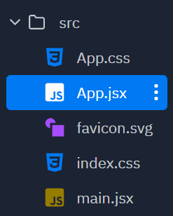
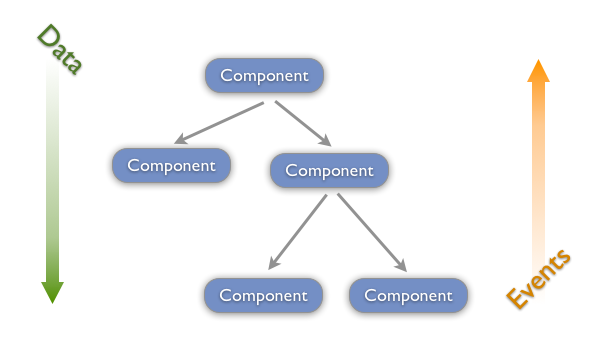
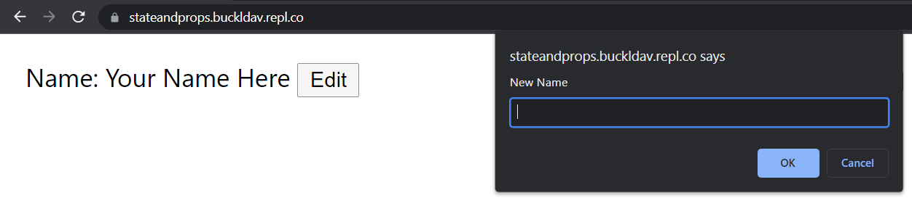

React State and Props
This lesson will show you how to make a React application and manage the app’s data.
Set Up React App
We will making React Apps using replit’s React Templates. For local development, here’s a quick guide on how to create a React app with Vite (the same build tool that replit uses). This is the project’s src directory, which is the only part of the project that we will concern ourselves with today.

Visit App.css and delete everything there so we can add our own markup without it looking odd.
Editing App.jsx and JSX Syntax
When you first open App.jsx in your project, you should see this:
import React from "react"
import "./App.css"
function App() {
return <main>React⚛️ + Vite⚡ + Replit🌀</main>
}
export default AppComponents
Let’s dissect the code. A React component is a class or function which renders a single element of HTML (and it’s children). Notice how our App function returns a <main> element. This ability to mix HTML and JavaScript together is thanks to the JSX syntax, unique to React.
Component State and Props
State
A component can store information in its state. To “hook” this functionality of storing information into a functional React component, we use the React Hook useState.
Consider this example below:
import React, { useState } from "react"
function App() {
const [clicks, setClicks] = useState(0)
return (
<button onClick={(e) => setClicks(clicks + 1)}>Clicks: {clicks}</button>
)
}<button id="count">Clicks: 0</button>
<script>
let count = 0;
const button = document.querySelector("#count");
button.addEventListener("click", e => {
count += 1;
button.innerHTML = "Clicks: " + count;
});
</script>This App component is keeping track of how many times the button was clicked in the clicks state variable. An onClick event handler was bound to the button where the setClicks method was called, updating clicks by adding 1 to the most recent value and setting clicks to the result of that addition.
Note that putting {} between tags (<button>Clicks {clicks}</button>) allows you to render variables as part of an element’s content easily.
Props
Component attributes are called props. Any component or HTML element can be given props in its opening tag. This includes user-defined components. Consider this example:
function HowMany(props) {
return (
<p>
You have {props.quantity} {props.things}.
</p>
)
}
function App() {
return (
<div>
<HowMany things="apples" quantity={3} />
<HowMany things="bananas" quantity={10} />
</div>
)
}<p>You have 3 apples.</p>
<p>You have 10 bananas.</p>In the above example, data was passed from the App component to its children HowMany components. The props were accessed in the HowMany component with the dot operator on the props object (props.quantity).
Data Flow with State and Props
State goes in parent components and get passed as props to children components. If a child needs to modify the state of its parent, you need to pass in a function from parent to child that can accomplish that. We’ll dive into this concept more later, but for now, check out this practice task below to see it in action.

Practice Task: User Profile
Here is an app with a faux user profile interface. You can access and fork the starting code here. You will only need to modify App.jsx. If you scroll down, you can see the relevant code that you will be extending.
So far, the app keeps track of the user’s name. In the return block, notice how there is a <UserField> component being used with three props.
<UserField field="Name" value={name} editValue={setName} />name and setName correspond with the state variable declared at the top of the App component. When you click the “Edit” button in the UI, the state updates with a new name.
function App() {
const [name, setName] = useState("Your Name Here");
...
}
Assignment
- Add two more state variables under the
name. (2 pts)- Make the variables have to do with the user (i.e. username, email, age, favoriteColor, etc.) (1 pt)
- Instantiate two more
<UserField>components with the state variable being passed in as props (3 props total,field,value, andeditValue). (2 pts)
Starting Code
Full code: https://replit.com/@buckldav/StateAndProps#src/App.jsx.
// App.jsx
import React, { useState } from "react"
import "./App.css"
function UserField(props) {
function buttonClick() {
const newValue = window.prompt("New " + props.field)
props.editValue(newValue)
}
return (
<p>
{props.field}: {props.value} <button onClick={buttonClick}>Edit</button>
</p>
)
}
function App() {
const [name, setName] = useState("Your Name Here")
// TODO: Add 2 more state variables
return (
<main>
<UserField field="Name" value={name} editValue={setName} />
{/* TODO: 2 more UserFields */}
</main>
)
}
export default App